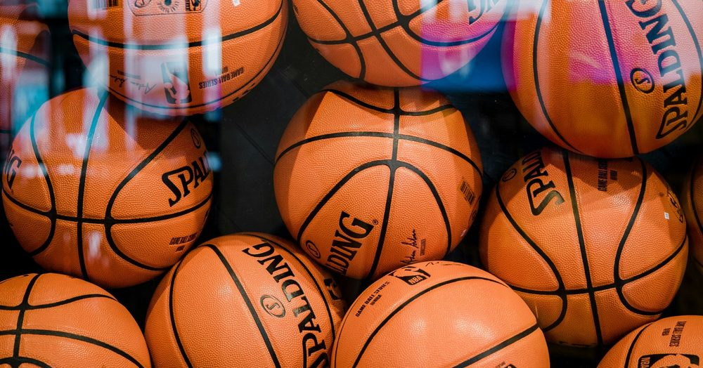

Who is the favorite to win the 2026-27 title?
Welcome! This site uses statistics and roster changes to estimate which NBA teams have the best chance of winning the 2026-27 championship. Instead of relying on hype or opinion, each ranking is backed by numbers you can check on Basketball-Reference and ESPN.

What the numbers say right now
As of November 2026, ESPN’s Basketball Power Index ranks the San Antonio Spurs first, ahead of the Boston Celtics and the Oklahoma City Thunder. The Spurs and Celtics both have a 10-2 record, and the Spurs have a net rating of +11.2 on Basketball-Reference. It is still early, given every team having played only 10 to 13 games, so these rankings will most likely change.
What changed this offseason
Two storylines stand out:
- LeBron James signed with the Philadelphia 76ers.
- Victor Wembanyama leads the league in win shares as the Spurs build around him.
See the Trade & Roster Impact page for how these moves show up in the stats, or go to Power Rankings to see all top ten teams.